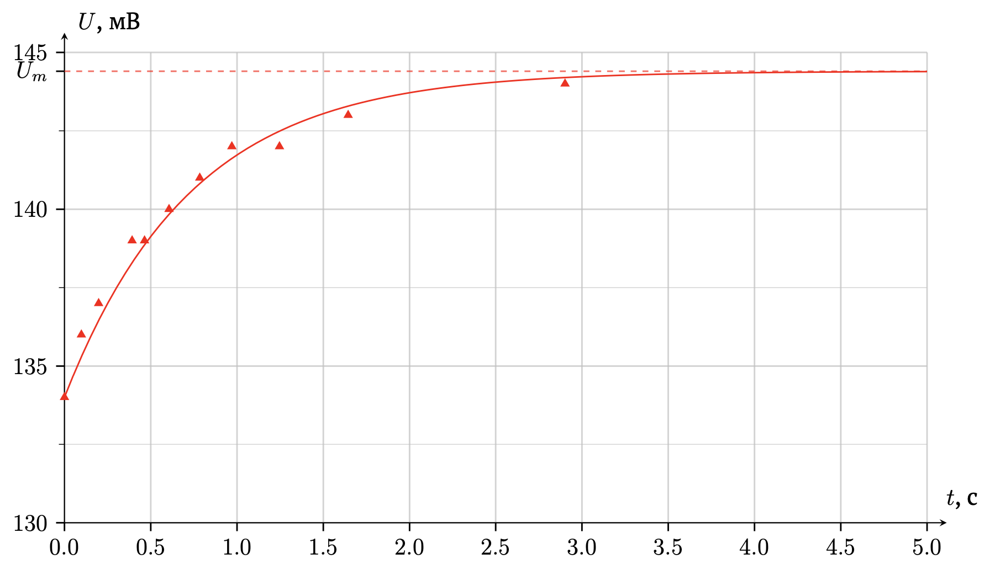
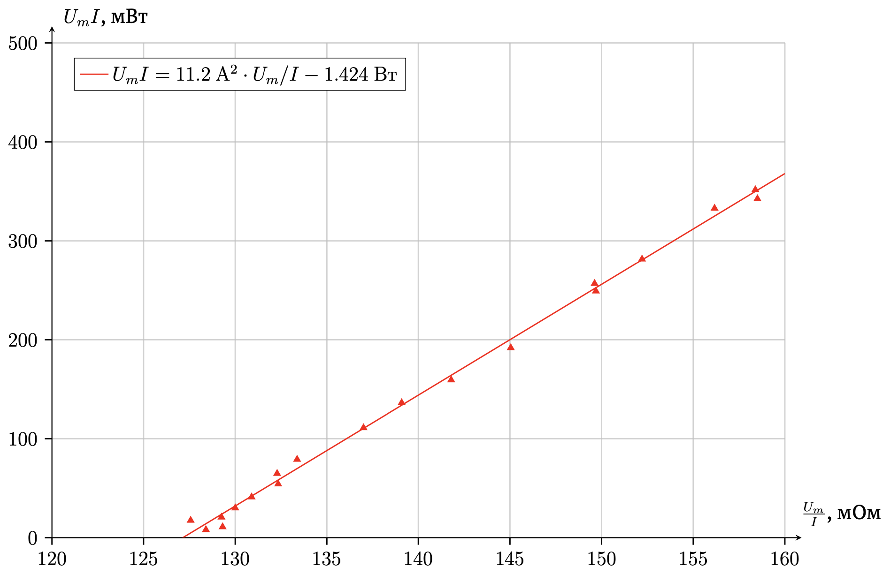
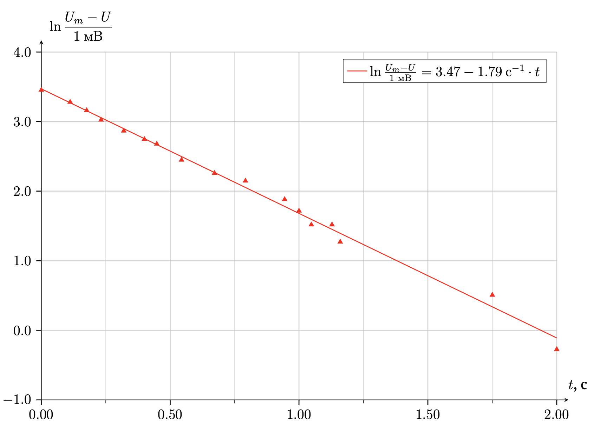
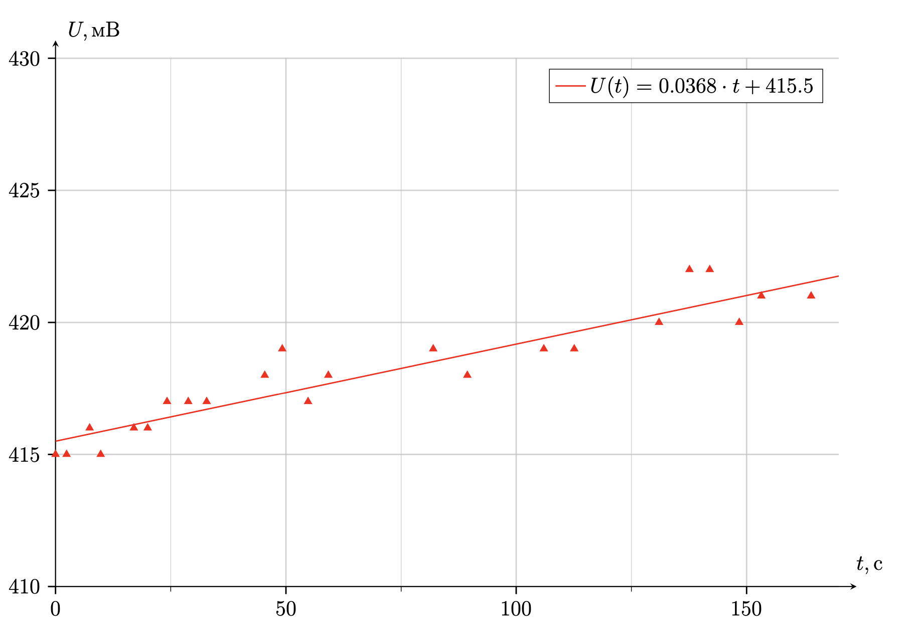
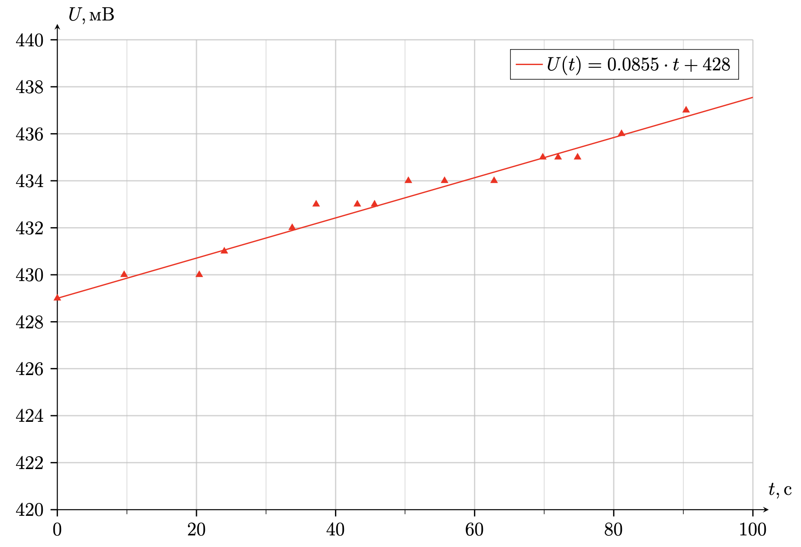
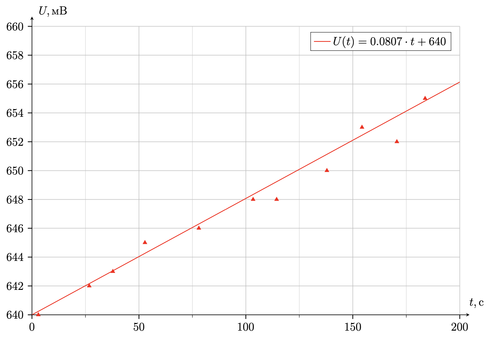
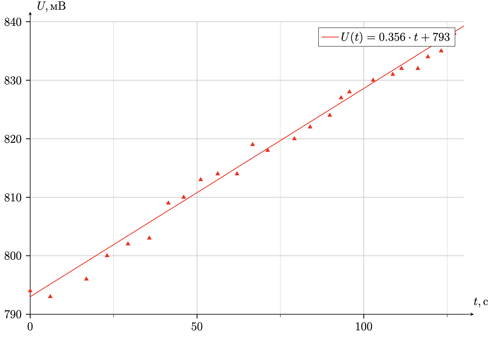
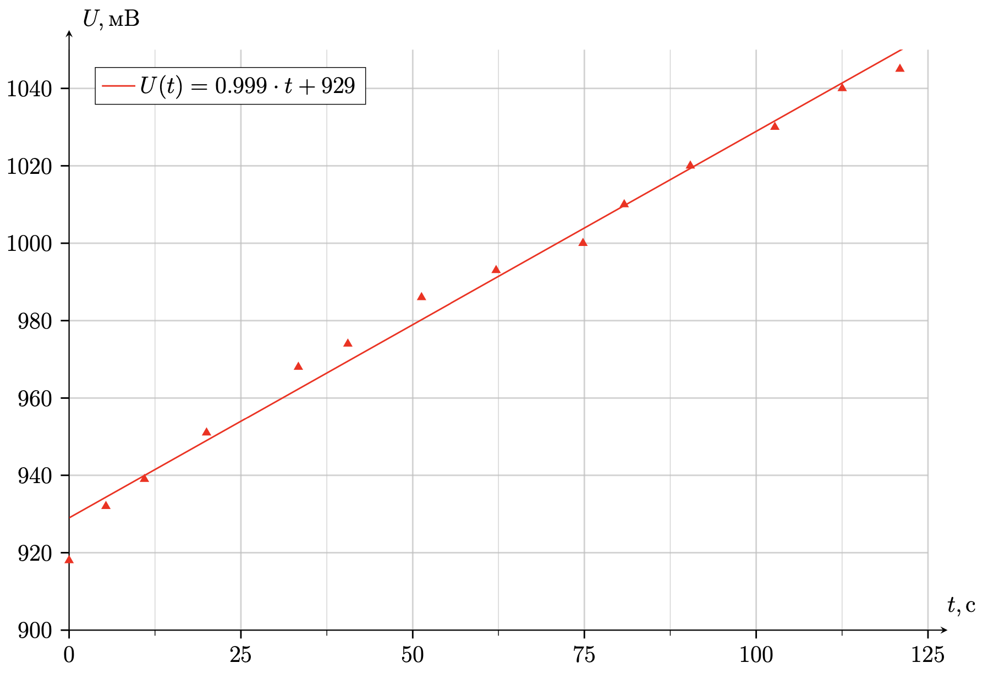
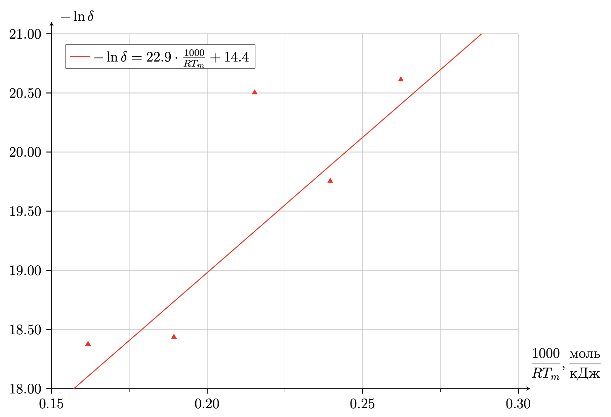

X25 (2025) — English translation
$t, ~\mathrm{ms}$ 0.00 0.10 0.20 0.39 0.46 0.61 0.78 0.97 1.25 1.64 $U_{avg}, ~\mathrm{mV}$ 134 136 137 139 139 140 141 142 142 143 $\ln\dfrac{U_m- U}{1~\mathrm{mV}}$ 2.30 02.08 1.95 1.61 1.61 1.39 1.10 0.69 0.69 0.00

$I, A$ 0.25 0.29 0.37 0.40 0.48 0.56 0.64 0.70 0.77 0.90 0.99 1.06 1.15 1.29 1.46 1.47 1.49 1.31 1.36 $U_m, мВ$ 32.1 37.5 47.2 51.7 62.4 73.3 84.7 92.6 102.7 123.3 137.7 150.3 166.8 193.1 228 233 236 196 207 $U_mI, мВт$ 8.0 10.9 17.5 20.7 30.0 41.0 54.2 64.8 79.1 111.0 136.3 159.3 191.8 249.1 332.9 342.5 351.6 256.8 281.5 $U_m/I, мОм$ 128.4 129.3 127.6 129.3 130.0 130.9 132.3 132.3 133.4 137.0 139.1 141.8 145.0 149.7 156.2 158.5 158.4 149.6 152.2
The wire resistance at temperature $T$ is equal to: \[R(T) = \dfrac{\alpha TL}{\pi r_0^2} = \dfrac{U}{I}\]
\[UI \mathrm{d}t= \rho_м \pi r_0^2 L c_м \mathrm{d}T + \beta \cdot 2\pi r_0L (T-T_0) \mathrm{d}t\]
When $U=U_m$: $~T=T(U_m)=\mathrm{const}$, it means: \[U_mI = \beta \cdot 2\pi r_0L (T(U_m)-T_0) \] From point A4 we express $T(U_m)$ and substitute: \[U_mI = \beta \cdot 2\pi r_0L \left(\dfrac{\pi r_0^2}{\alpha L}\cdot \dfrac{U_m}{I}-T_0\right) \]
\[U_mI = \beta \cdot 2\pi r_0L \left(\dfrac{\pi r_0^2}{\alpha L}\cdot \dfrac{U_m}{I}-T_0\right) \]
Let's build a graph in axes $U_mI$ and $\dfrac{U_m}{I}$, $\beta = \dfrac{\alpha k_{угл}}{2\pi^2r_0^3}$

\[UI = \rho_м \pi r_0^2 L c_м\cdot \dfrac{\pi r_0^2}{\alpha IL} \cdot \dfrac{\mathrm{d}U}{\mathrm{d}t} +\beta \cdot 2\pi r_0L \left(\dfrac{\pi r_0^2}{\alpha IL}\cdot U-T_0\right) \]\[U\left(I - \dfrac{2\beta \pi^2r_0^3}{\alpha I}\right) +2\beta \pi r_0 LT_0 =\rho_м c_м\cdot \dfrac{\pi^2 r_0^4}{\alpha I} \cdot \dfrac{\mathrm{d}U}{\mathrm{d}t} \]\[\int\limits_0^t\mathrm{d}t = \rho_м c_м\cdot \dfrac{\pi^2 r_0^4}{\alpha I} \cdot \int\limits_{U_0}^{U(t)}\dfrac{\mathrm{d}U}{U\left(I - \dfrac{2\beta \pi^2r_0^3}{\alpha I}\right) +2\beta \pi r_0 LT_0}\]\[t = \dfrac{\rho_м c_м\pi^2 r_0^4}{\alpha I^2 - 2\beta \pi^2r_0^3}\cdot\ln \dfrac{U\left(I - \dfrac{2\beta \pi^2r_0^3}{\alpha I}\right) +2\beta \pi r_0 LT_0}{U_0\left(I - \dfrac{2\beta \pi^2r_0^3}{\alpha I}\right) +2\beta \pi r_0 LT_0}\]\[U\left(I - \dfrac{2\beta \pi^2r_0^3}{\alpha I}\right) +2\beta \pi r_0 LT_0 =\left( U_0\left(I - \dfrac{2\beta \pi^2r_0^3}{\alpha I}\right) +2\beta \pi r_0 LT_0\right)\cdot \exp\left( \dfrac{\alpha I^2 - 2\beta \pi^2r_0^3}{\rho_м c_м\pi^2 r_0^4}\cdot t\right)\]\[U(t) =\left( U_0 +\dfrac{2\beta \pi r_0 LT_0}{I - \dfrac{2\beta \pi^2r_0^3}{\alpha I}}\right)\cdot \exp\left( \dfrac{\alpha I^2 - 2\beta \pi^2r_0^3}{\rho_м c_м\pi^2 r_0^4}\cdot t\right) - \dfrac{2\beta \pi r_0 LT_0}{I - \dfrac{2\beta \pi^2r_0^3}{\alpha I}}\]\[U(t) = U_0 - \left( U_0 +\dfrac{2\beta \pi r_0 LT_0}{I - \dfrac{2\beta \pi^2r_0^3}{\alpha I}}\right)\cdot \left(1-\exp\left( \dfrac{\alpha I^2 - 2\beta \pi^2r_0^3}{\rho_м c_м\pi^2 r_0^4}\cdot t\right) \right)\]
\[U(t) = U_0 + (U_m - U_0)\cdot \left(1-\exp\left(-\dfrac{2\beta \pi^2r_0^3 -\alpha I^2}{\rho_м c_м\pi^2 r_0^4}\cdot t\right) \right)\]
\[1- \dfrac{U(t) - U_0}{U_m - U_0} = \exp\left(-\dfrac{2\beta \pi^2r_0^3 -\alpha I^2}{\rho_м c_м\pi^2 r_0^4}\cdot t\right) \]\[\ln\dfrac{U_m-U(t)}{U_m-U_0}=-\dfrac{2\beta \pi^2r_0^3 -\alpha I^2}{\rho_м c_м\pi^2 r_0^4}\cdot t\]

\[c_м^{th} = \dfrac{3R}{\mu} = 392.6~\dfrac{\mathrm{J}}{kg\cdot \mathrm{K}}\]
$I = 2.00~\mathrm{A}$
$I = 2.15~\mathrm{A}$
$I = 2.30~\mathrm{A}$
$I = 2.45~\mathrm{A}$
$I = 2.60~\mathrm{A}$
$n$ $I, \mathrm{A}$ $R_n, \Omega$ $U_0, В$ $\gamma(I), мВ/с$ $L, м$ $\delta, m/s$ $T_m, \mathrm{K}$ $\ln\delta$ $1/RT_m, \dfrac{\mathrm{mol}}{\mathrm{J}}$ 1 2.00 0.105 0.416 0.037 0.0482 1.12$\cdot$ 10$^\text{-09}$ 458.9 -20.61 2.62$\cdot$ 10$^\text{-04}$ 2 2.15 0.105 0.428 0.086 0.0482 2.63$\cdot$ 10$^\text{-09}$ 502.3 -19.75 2.40$\cdot$ 10$^\text{-04}$ 3 2.30 0.110 0.640 0.081 0.0505 1.25$\cdot$ 10$^\text{-09}$ 559.0 -20.50 2.15$\cdot$ 10$^\text{-04}$ 4 2.45 0.265 0.766 0.356 0.0405 9.85$\cdot$ 10$^\text{-09}$ 635.6 -18.44 1.89$\cdot$ 10$^\text{-04}$ 5 2.60 0.136 0.919 0.999 0.0624 1.05$\cdot$ 10$^\text{-09}$ 744.0 -18.38 1.62$\cdot$ 10$^\text{-04}$





\[R_n = \dfrac{\alpha T_0 L_n}{\pi r_0^2}\]
\[UI = 2\beta\pi r_0 L(T-T_0) \]
\[U_0 + \gamma(I) t =\dfrac{\alpha IL}{\pi r(t)^2}\cdot \left(T_0 + \dfrac{(U_0 + \gamma(I)t)I}{2\beta \pi r_0 L}\right)\]
\[r^2(t) \approx \dfrac{\alpha IL}{\pi} \left(\dfrac{I}{2\beta\pi r_0 L} + \dfrac{T_0}{U_0+\gamma t} \right) \approx \dfrac{\alpha IL}{\pi} \left(\dfrac{I}{2\beta\pi r_0 L} + \dfrac{T_0}{U_0} -\dfrac{\gamma T_0}{U_0^2}t \right) \]\[r(t) = \sqrt{\dfrac{\alpha IL}{\pi}\left(\dfrac{I}{2\beta\pi r_0 L} + \dfrac{T_0}{U_0}\right) \cdot \left( 1- \dfrac{\gamma T_0 t}{\dfrac{IU_0^2}{2\beta \pi r_0 L}+U_0 T_0} \right)} \]\[r(t) = \sqrt{\dfrac{\alpha IL}{\pi}\left(\dfrac{I}{2\beta\pi r_0 L} + \dfrac{T_0}{U_0}\right) }\cdot \left( 1- \dfrac{\gamma T_0 t}{\dfrac{IU_0^2}{\beta \pi r_0 L}+2U_0 T_0} \right) \]
\[r(t) = r_0\cdot \left( 1- \dfrac{\gamma T_0 t}{\dfrac{IU_0^2}{\beta \pi r_0 L}+2U_0 T_0} \right) \]
\[\delta = \dfrac{\alpha ILr_0 \gamma T_0}{2U_0^2 \pi r_0^2} \]
\[T_m = T(U_m) = \dfrac{\pi r_0^2}{\alpha IL} \cdot U_m =\dfrac{2\pi^2 r_0^3 \beta T_0}{-\alpha I^2 +2\beta \pi^2 r_0^3} \]
\[\ln \delta = \ln \delta_0 - \dfrac{E_A}{RT_m}\]
